Note
Hello, welcome to the SunFounder Raspberry Pi & Arduino & ESP32 Enthusiasts Community on Facebook! Dive deeper into Raspberry Pi, Arduino, and ESP32 with fellow enthusiasts.
Why Join?
Expert Support: Solve post-sale issues and technical challenges with help from our community and team.
Learn & Share: Exchange tips and tutorials to enhance your skills.
Exclusive Previews: Get early access to new product announcements and sneak peeks.
Special Discounts: Enjoy exclusive discounts on our newest products.
Festive Promotions and Giveaways: Take part in giveaways and holiday promotions.
👉 Ready to explore and create with us? Click [here] and join today!
Lesson 5 Interactive Animation
Previously, we used the ultrasonic module to make GalaxyRVR automatically avoid obstacles in its path.
In this activity, we will combine the module with a stage to create an interactive animation of a rover joyfully traversing the surface of Mars.
Learning Objectives
Learn how to draw sprites and edit backgrounds.
Understand basic programming concepts such as event listeners and loop structures.
Get familiar with the APP programming environment and basic operations to create a simple animation simulating a Mars rover.
Adding New Sprites
First, Connecting the APP to GalaxyRVR.
Delete any sprites you don’t need.
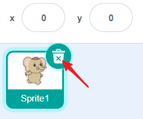
In the bottom right corner of the interface, tap the Choose a Sprite button to reveal four options.
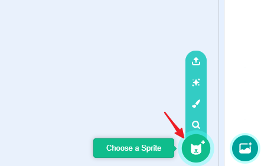
On smaller screens, you may need to switch to another screen to see this button.
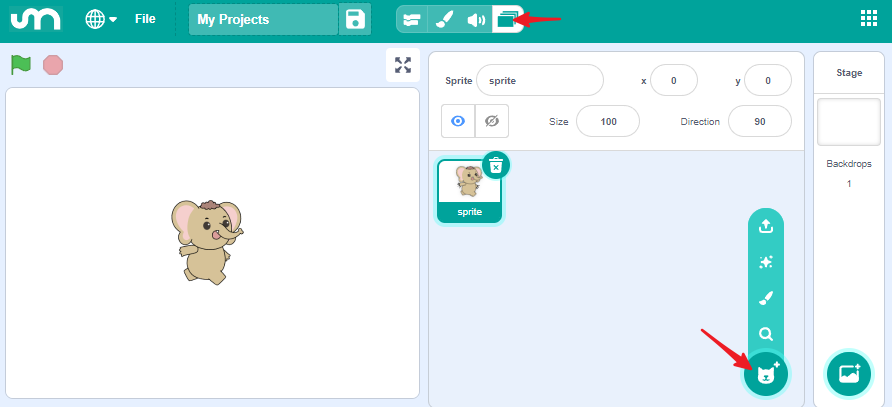
The four options are:
Upload Sprite – Load a sprite from your device.
Surprise – Randomly select a sprite from the library.
Paint – Draw your own sprite.
Choose a Sprite – Select from the sprite library.
Next, we will use Choose a Sprite to select a sprite and Paint to draw one.
Choose a Sprite
Tap Choose a Sprite (magnifier icon) to open the sprite library.
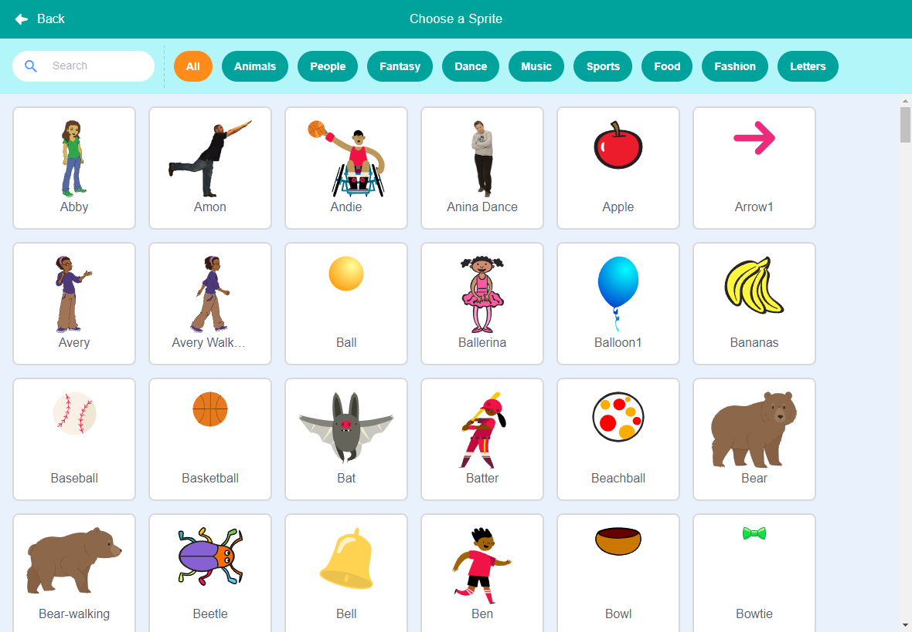
Find and select GalaxyRVR from the library.
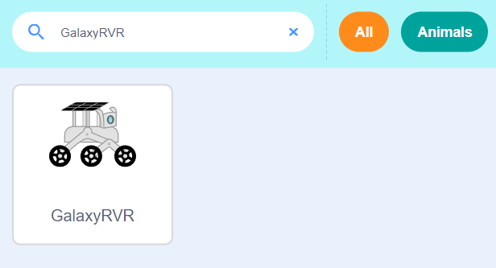
Paint a New Sprite
Tap Paint (brush icon) to create a new sprite. We’ll draw a Mars sprite.
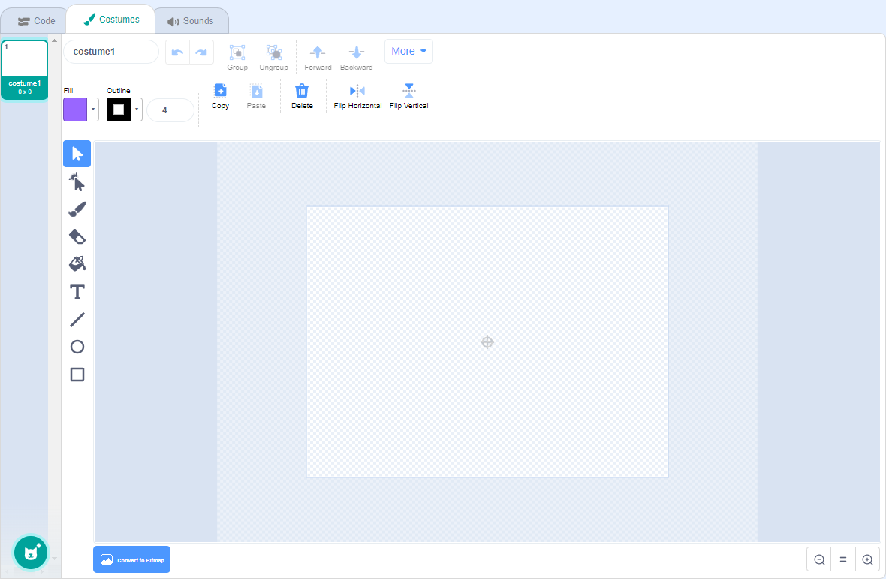
Use the Circle Tool to draw a circle representing the planet.
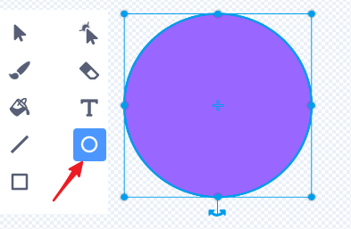
Use the Pointer Tool to move the circle to the center of the canvas. This step is important because the sprite’s coordinates and movements are based on its center.
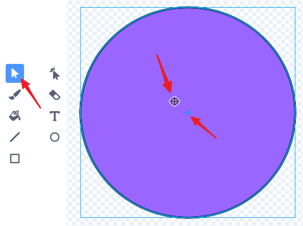
Use the Paint Bucket Tool to fill the circle with red.
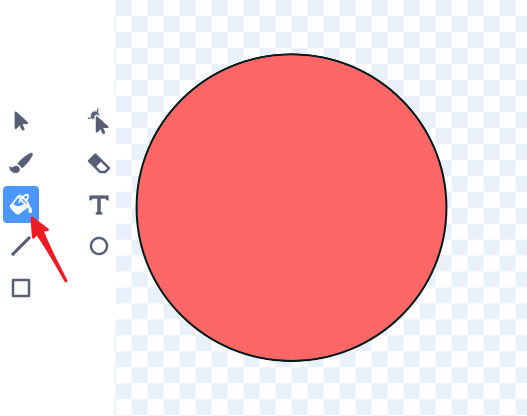
Select the Brush Tool, increase the brush size, and add texture with a suitable fill color.
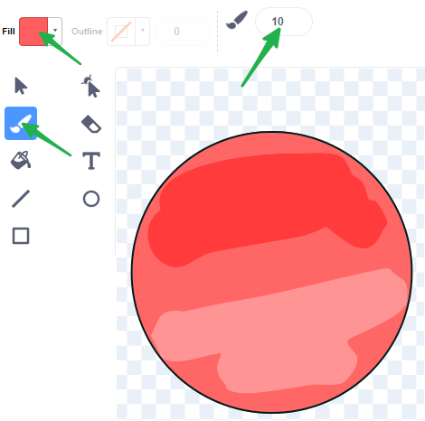
If the color doesn’t look right, change the fill color and use the Paint Bucket Tool again.
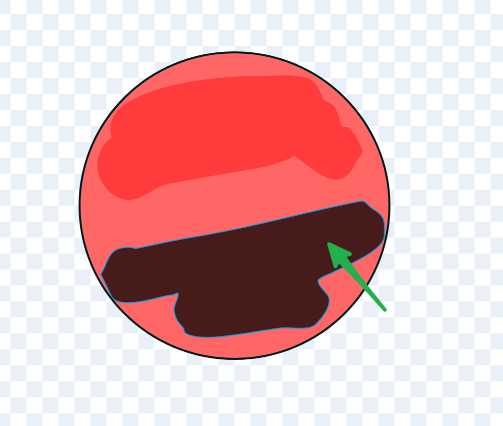
Select the Brush Tool again, set the size to 2, change the color to black, and draw craters on Mars.
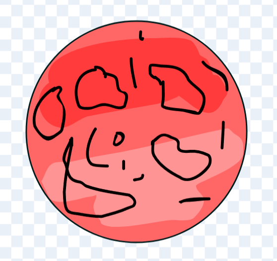
Use the Paint Bucket Tool to fill the craters with a suitable color.
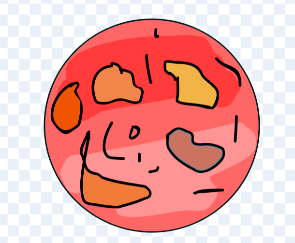
Once finished, switch back to the Code Interface.
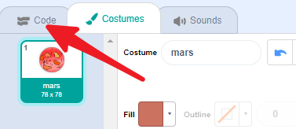
On smaller screens, click the icon to return to the Code Interface.
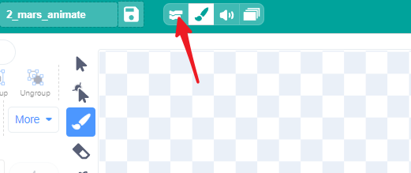
You’ll now see the Mars sprite on the stage. Don’t forget to rename it.
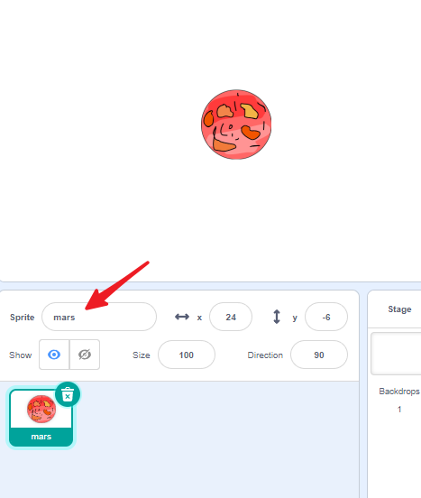
Stage
Click on Backdrops to modify the background. The default white backdrop will be changed to simulate a night sky.
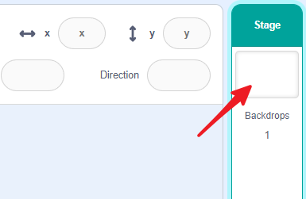
Enter the Backdrops interface.
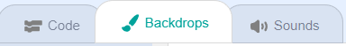
Draw a rectangle on the canvas.
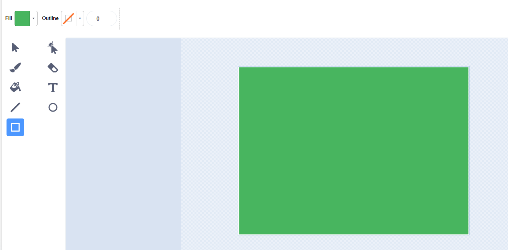
Use the Paint Bucket Tool to fill it with a dark color.
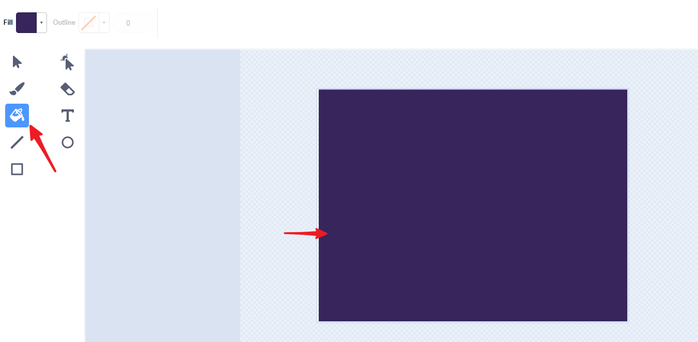
Use the Brush Tool to add some stars.
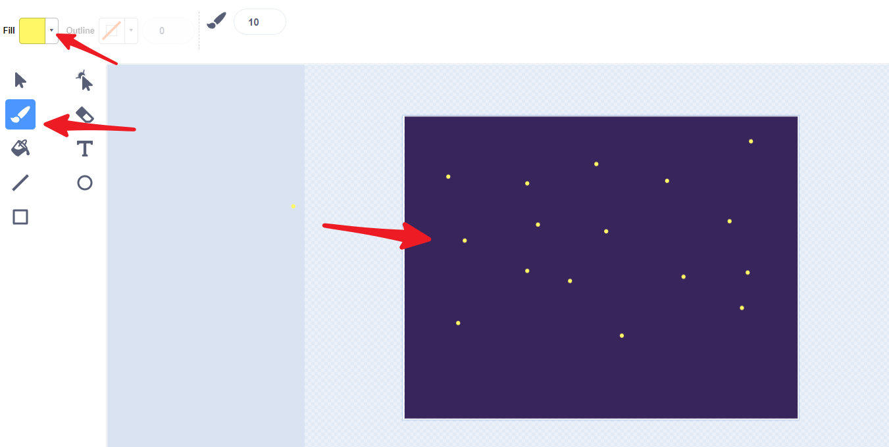
Creating the Animation
Now that we have Mars and GalaxyRVR, and we know how to animate sprites, let’s create an animation of GalaxyRVR moving on Mars. We can make the sprite appear to move by rotating Mars in the opposite direction, creating the effect of GalaxyRVR moving across its surface.
First, Connecting the APP to GalaxyRVR.
Adjust the size and position of both sprites.
Set the GalaxyRVR sprite to (0, 0) and position Mars so GalaxyRVR appears to stand on its surface.
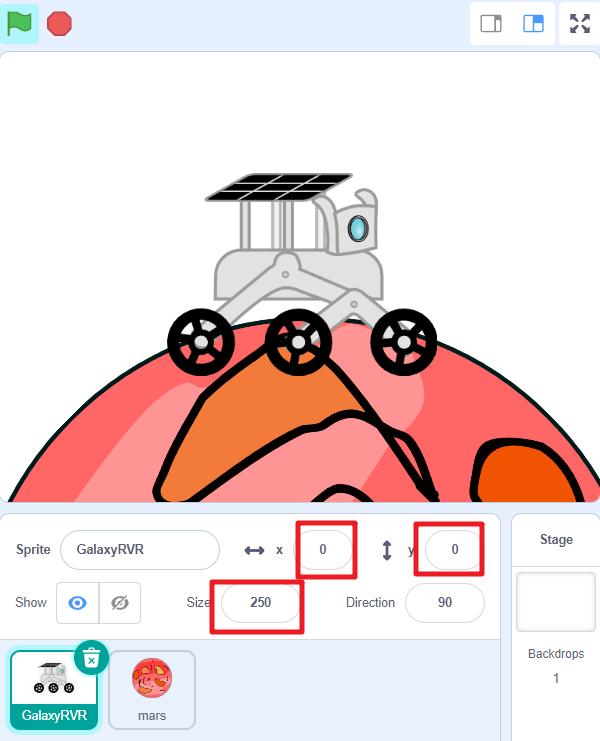
Mars Sprite
Select the Mars sprite. Its task is to rotate counterclockwise, creating the illusion that GalaxyRVR is moving forward.
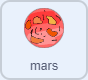
Drag a green flag block. All animation starts with the green flag.
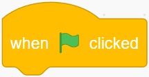
Drag a
foreverblock to keep the animation running continuously.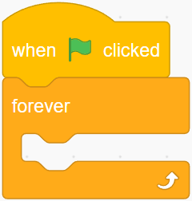
Drag a
turnblock and awaitblock to make Mars rotate continuously.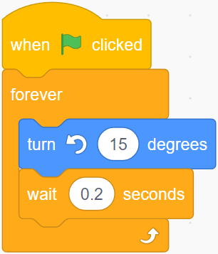
Now click the green flag, and you will see Mars rotating counterclockwise.
GalaxyRVR Sprite
Select the GalaxyRVR sprite. Its task is to animate as if it’s moving, even though it isn’t actually moving.
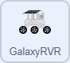
Drag a green flag block. All animation starts with the green flag.
Drag a
foreverblock to keep the animation running continuously.Drag a
next costumeblock and awaitblock to make GalaxyRVR continuously animate.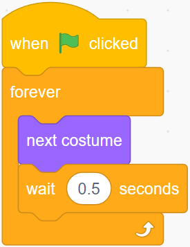
Drag a
when distanceblock. This will trigger when the ultrasonic module detects an obstacle (e.g., your hand).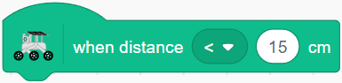
Drag two
glideblocks and change the y-value of the first one to make the sprite jump up and then come down, creating a jumping effect.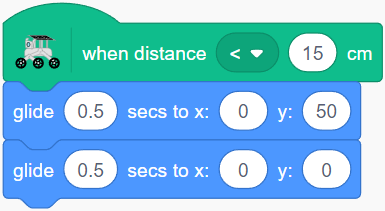
The complete code for the GalaxyRVR sprite should look like this:
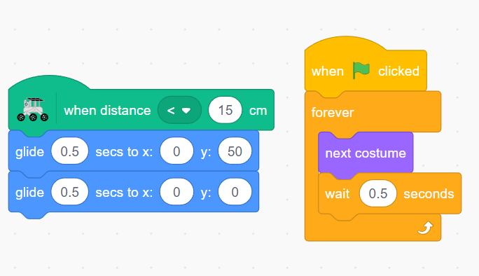
Now, click the green flag to start the animation. Simulate an obstacle by placing your hand in front of the ultrasonic module, and the GalaxyRVR sprite will jump to avoid it.